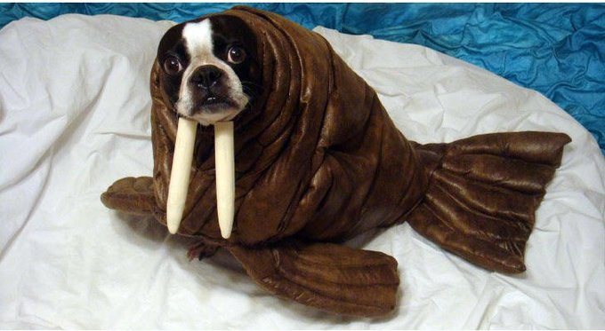

Peek-a-Boo
Peek-a-booong> is an ancient game riddled in mystery and deceit. Though it appears to be an innocent children's pastime, you may change your mind when you learn of its treacherous history.
What a cute walrus! Click here to hide her again.
Click here to learn about walruses

- The Latin name for the walrus translates as “tooth-walking sea horse."
- Orcas and polar bears are their only natural predators.
- Walrus can withstand freezing temperatures as low as -35°C (-31°F)